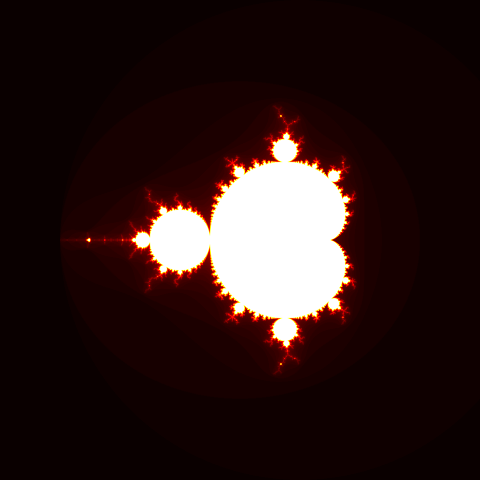
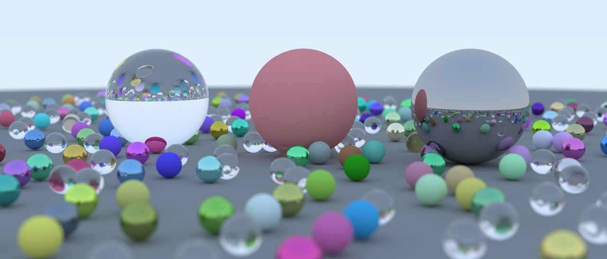
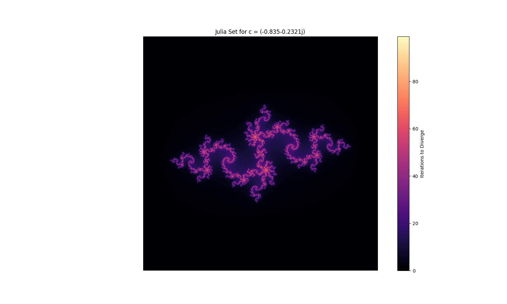
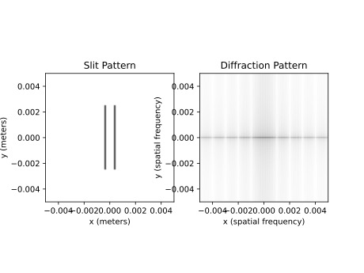

My Programming Projects
Welcome to my programming portfolio! This space serves as a showcase of the various projects
I've worked on over the years. Here, you'll find a curated collection of work developed both
through academic coursework and personal exploration. Each project represents not just the
technical skills I've developed, but also my passion for building solutions and exploring
creative approaches to programming challenges.
From structured school assignments to independent passion projects, I aim to demonstrate a
balance of precision and innovation in my work. These projects highlight my problem-solving
mindset, my focus on writing clean and maintainable code, and my continuous drive to improve
and learn new technologies.
I encourage you to explore these projects and get a sense of how I approach development,
design, and problem-solving. Whether you're interested in how I tackle real-world issues,
optimize performance, or experiment with new frameworks and languages, I hope you find value
in what I've built—and that you find these projects as exciting and engaging as I do.

Programming

Ray Tracing Engine - C#
This was an incredible experience for me. I was always interested in graphics, so for a final project in an OOP course I made a ray tracing engine from a book called "Ray Tracing in One Weekend". It was challenging but rewarding to see the images come to life.

Julia Set - Python
This was a compounding project for me. I first made a program to make a Mandelbrot set, and then I made one to create a Julia Set. In the future I hope to make a program that animates many Julia sets together.

Double Slit
This program helped me to explore my interest of optics. I first have to define an aperture, and then I can simulate the diffraction pattern that results from it.